中文全文译文：由「译文工坊」根据英文原文自动翻译生成，供学习参考。结构与措辞以译文为准；想看原始论述，请点上方「阅读原文」。
使用 Claude 和 Skills 构建更丰富、更具个性的前端设计的最佳实践。
你可能已经注意到，如果不加引导地让大语言模型（LLM）构建一个落地页，它几乎总是千篇一律：Inter 字体、白底紫色渐变，再配上极简的动画。
问题出在哪？分布收敛（Distributional convergence）。在采样过程中，模型会根据训练数据中的统计规律预测 Token。那些放之四海而皆准、不得罪任何人的安全设计选择，在网页训练数据中占据主导。没有方向引导时，Claude 就会从这个高概率的中心区域采样。
对于开发面向客户产品的开发者来说，这种千篇一律的审美会削弱品牌形象，让 AI 生成的界面一眼就能被认出来，也很容易被忽视。
可引导性的挑战
好消息是，只要有恰当的提示词设计，Claude 的可引导性很强。告诉 Claude“避免使用 Inter 和 Roboto”，或“使用有氛围感的背景，而不是纯色背景”，效果会立刻改善。这种对引导的敏感是一项优势：它意味着 Claude 能适应不同的设计上下文、约束和审美偏好。
但这也带来一个现实挑战：任务越专业，需要提供的上下文就越多。对于前端设计，有效的引导涵盖排版原则、色彩理论、动画模式和背景处理。你需要在多个维度上明确指出要避开哪些默认选择，以及更倾向哪些替代方案。
你可以把这些内容全部塞进系统提示词，但这样一来，每个请求，无论是调试 Python、分析数据还是写邮件，都得带上前端设计的上下文。问题就变成了：如何只在需要的时候为 Claude 提供特定领域的指引，而不让无关任务背负永久的上下文开销？
Skills：动态加载上下文
这正是 Skills 的设计初衷：按需提供专业上下文，而没有永久开销。一个 skill 是一份文档（通常是 markdown），包含指令、约束和领域知识，存放在指定目录中，Claude 可以通过简单的文件读取工具访问。Claude 可以借助这些 skills 在运行时动态加载所需信息，逐步丰富自己的上下文，而不是一开始就全部加载。
当 Claude 配备了这些 skills 以及读取它们所需的工具后，就能根据手头的任务自主识别并加载相关的 skills。例如，当被要求构建落地页或创建 React 组件时，Claude 可以加载前端设计 skill，并即时应用其中的指令。这正是理解 skills 的关键心智模型：skills 是按需激活的提示词和上下文资源，能为特定类型的任务提供专门指导，而不会带来永久性的上下文开销。
这样，开发者既能享受 Claude 良好的可引导性，又不必把各种任务的零散指令都塞进系统提示词，从而避免上下文窗口过载。正如我们之前所解释的，上下文窗口中的 Token 过多会导致性能下降，因此保持上下文窗口内容精简而聚焦，对于让模型发挥最佳表现极为重要。Skills 通过让有效的提示词可复用、可按上下文调用，解决了这个问题。
用提示词设计提升前端输出
通过创建前端设计 skill，我们可以在不增加永久性上下文开销的情况下，显著提升 Claude 生成的 UI 质量。其核心思路是像前端工程师那样思考前端设计：越能把美学上的改进映射为可实现的前端代码，Claude 执行得就越好。
基于这一思路，我们找到了几个针对性提示词效果很好的方向：排版、动画、背景效果和主题。它们都能顺畅地转化为 Claude 可以编写的代码。在提示词中实现这一点并不需要详尽的技术指令，只需用有针对性的语言，引导模型在这些设计维度上更深入地思考，就足以获得更出色的输出。这与我们在上下文工程博文中给出的建议高度一致：以恰当的“高度”向模型发出提示，避开两个极端——一端是像指定精确十六进制色值这样的低层级硬编码逻辑，另一端是假定双方共享上下文的含糊的高层级指引。
排版
为了直观地说明这一点，我们先从排版入手，把它视为可以通过提示词设计来影响的一个维度。下面的提示词专门引导 Claude 使用更有趣的字体：
<use_interesting_fonts>
Typography instantly signals quality. Avoid using boring, generic fonts.
Never use: Inter, Roboto, Open Sans, Lato, default system fonts
Here are some examples of good, impactful choices:
- Code aesthetic: JetBrains Mono, Fira Code, Space Grotesk
- Editorial: Playfair Display, Crimson Pro
- Technical: IBM Plex family, Source Sans 3
- Distinctive: Bricolage Grotesque, Newsreader
Pairing principle: High contrast = interesting. Display + monospace, serif + geometric sans, variable font across weights.
Use extremes: 100/200 weight vs 800/900, not 400 vs 600. Size jumps of 3x+, not 1.5x.
Pick one distinctive font, use it decisively. Load from Google Fonts.
</use_interesting_fonts>使用基础提示词生成的输出：
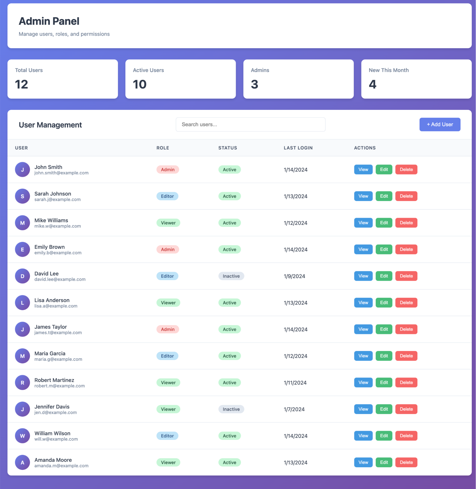
使用基础提示词加排版部分生成的输出
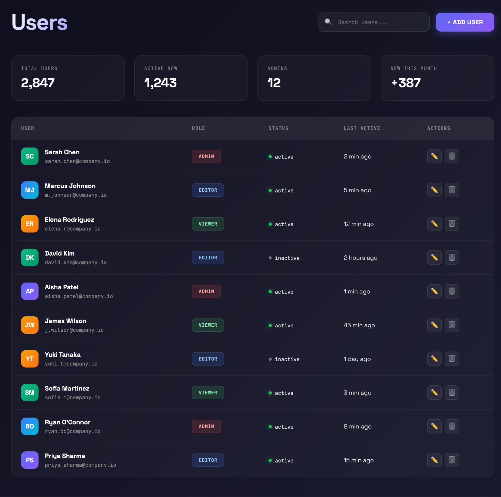
有意思的是，要求使用更有趣的字体，似乎也促使模型改进了设计的其他方面。
仅靠排版就能带来显著提升，但字体只是其中一个维度。那么整个界面的整体美学呢？
主题
我们还可以通过提示词引导另一个维度：参考知名主题和美学风格的设计。Claude 对流行主题有丰富的理解，我们可以借此传达希望前端呈现的具体美学。下面是一个示例：
<always_use_rpg_theme>
Always design with RPG aesthetic:
- Fantasy-inspired color palettes with rich, dramatic tones
- Ornate borders and decorative frame elements
- Parchment textures, leather-bound styling, and weathered materials
- Epic, adventurous atmosphere with dramatic lighting
- Medieval-inspired serif typography with embellished headers
</always_use_rpg_theme>这会生成如下 RPG 主题的 UI：
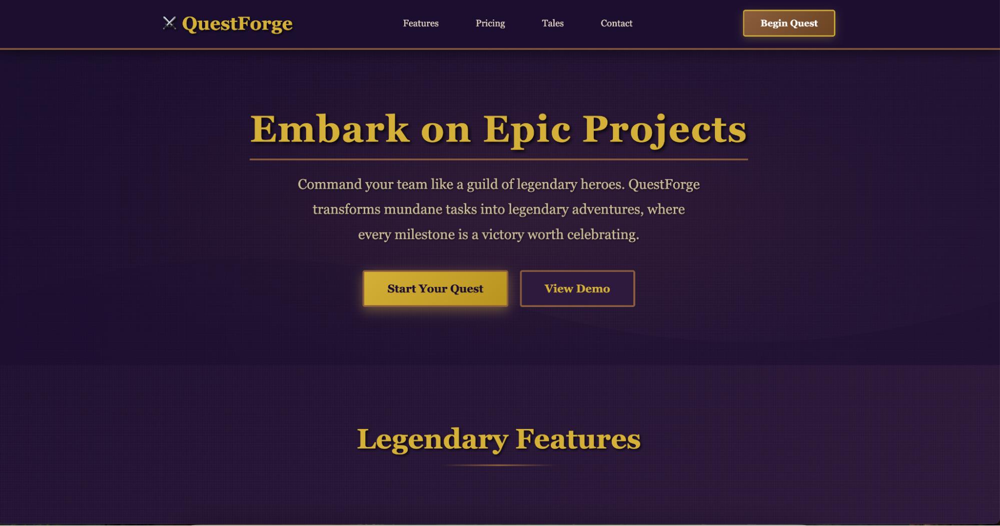
排版和主题证明了针对性的提示词设计行之有效。但逐个手动指定每个维度太繁琐了。如果能把这些改进整合成一个可复用的资产呢？
通用提示词
同样的原则也适用于其他设计维度：针对动效（动画和微交互）进行提示词设计，能增添静态设计所缺乏的精致感；引导模型做出更有趣的背景选择，则能带来层次感和视觉趣味。这正是一个完整 Skill 大显身手的地方。
综合以上思路，我们编写了一个约 400 个 Token 的提示词。它足够精简，即使作为 Skill 加载也不会撑大上下文，却能显著提升前端在排版、色彩、动效和背景方面的输出：
<frontend_aesthetics>
You tend to converge toward generic, "on distribution" outputs. In frontend design,this creates what users call the "AI slop" aesthetic. Avoid this: make creative,distinctive frontends that surprise and delight.
Focus on:
- Typography: Choose fonts that are beautiful, unique, and interesting. Avoid generic fonts like Arial and Inter; opt instead for distinctive choices that elevate the frontend's aesthetics.
- Color & Theme: Commit to a cohesive aesthetic. Use CSS variables for consistency. Dominant colors with sharp accents outperform timid, evenly-distributed palettes. Draw from IDE themes and cultural aesthetics for inspiration.
- Motion: Use animations for effects and micro-interactions. Prioritize CSS-only solutions for HTML. Use Motion library for React when available. Focus on high-impact moments: one well-orchestrated page load with staggered reveals (animation-delay) creates more delight than scattered micro-interactions.
- Backgrounds: Create atmosphere and depth rather than defaulting to solid colors. Layer CSS gradients, use geometric patterns, or add contextual effects that match the overall aesthetic.
Avoid generic AI-generated aesthetics:
- Overused font families (Inter, Roboto, Arial, system fonts)
- Clichéd color schemes (particularly purple gradients on white backgrounds)
- Predictable layouts and component patterns
- Cookie-cutter design that lacks context-specific character
Interpret creatively and make unexpected choices that feel genuinely designed for the context. Vary between light and dark themes, different fonts, different aesthetics. You still tend to converge on common choices (Space Grotesk, for example) across generations. Avoid this: it is critical that you think outside the box!
</frontend_aesthetics>在上面的示例中，我们首先向 Claude 提供问题的总体上下文，以及我们想要解决的目标。我们发现，给模型提供这类高层次的上下文，是校准输出的有效提示词技巧。接着，我们列出前面讨论过的设计改进方向，并给出有针对性的建议，鼓励模型在所有这些维度上更有创意地思考。
我们还在末尾加入了额外的指引，防止 Claude 收敛到另一个局部最优。即使明确要求避开某些模式，模型也可能默认选择其他常见方案（比如排版上选用 Space Grotesk）。最后那句“跳出思维定式”的提醒，则强化了创意上的多样性。
对前端设计的影响
启用这个 Skill 后，Claude 在多种前端设计上的输出都有所提升，包括：
示例 1：SaaS 落地页

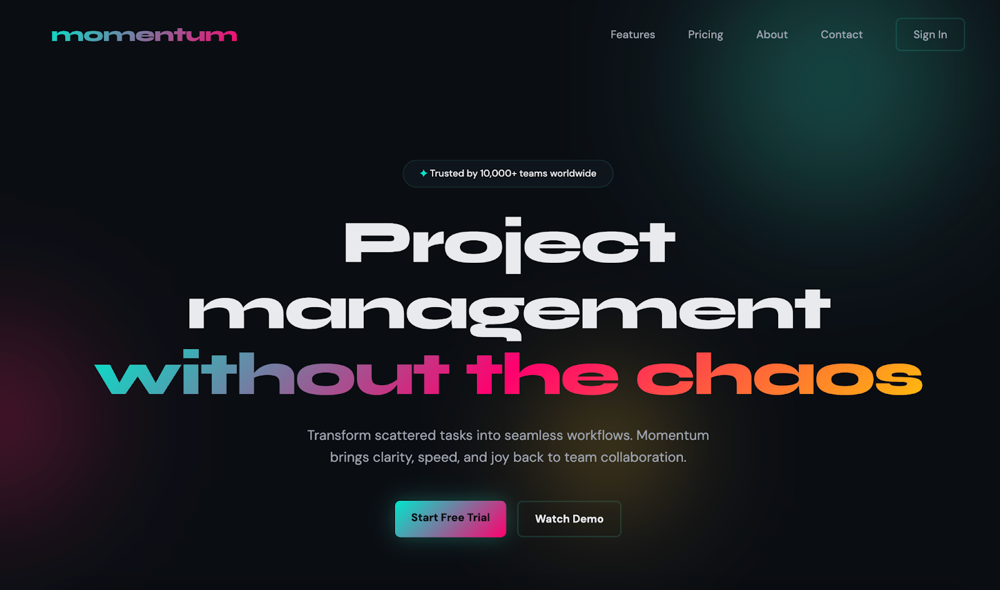
示例 2：博客布局
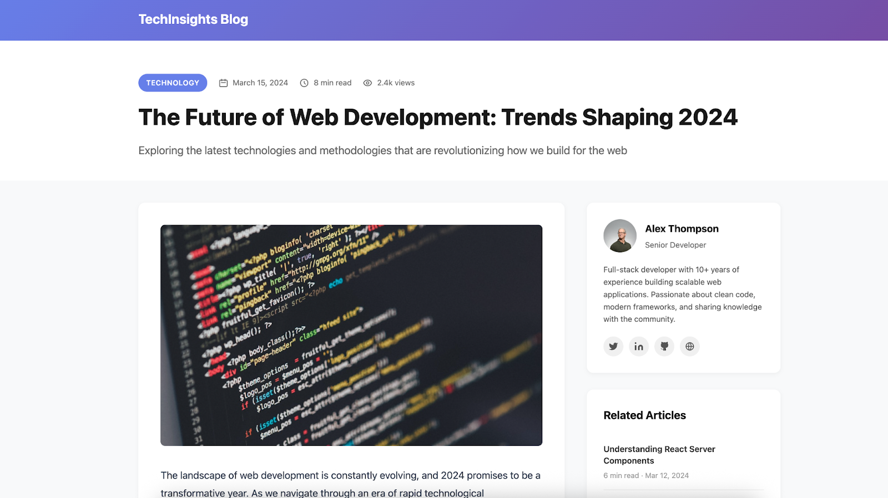
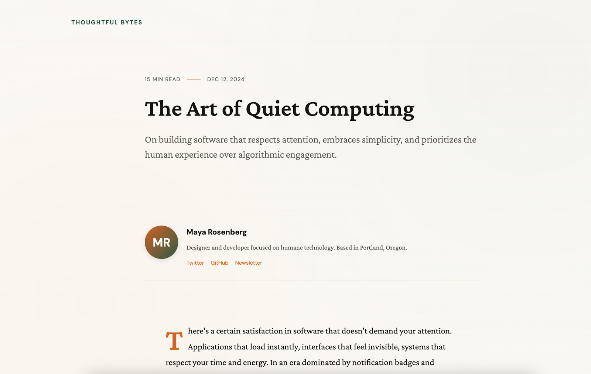
示例 3：管理后台仪表盘
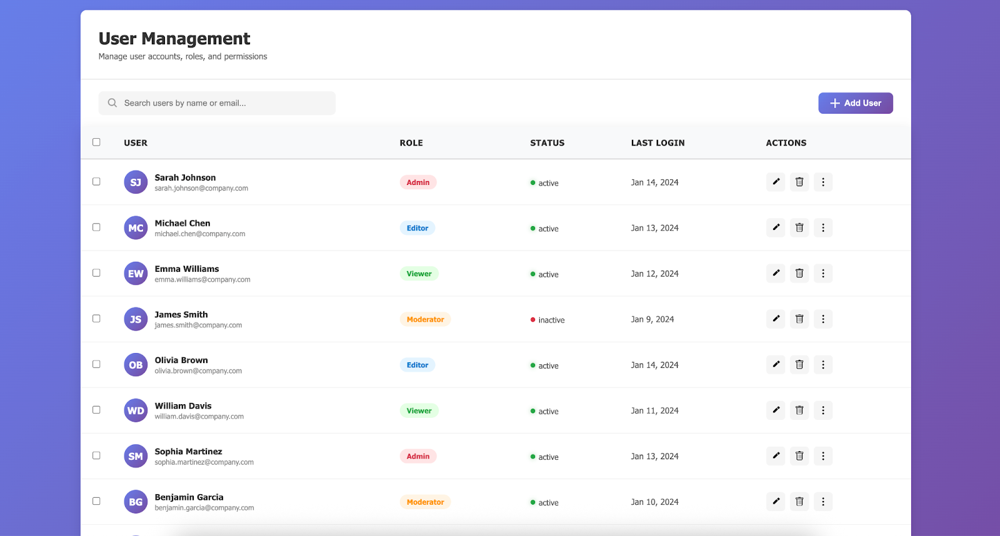
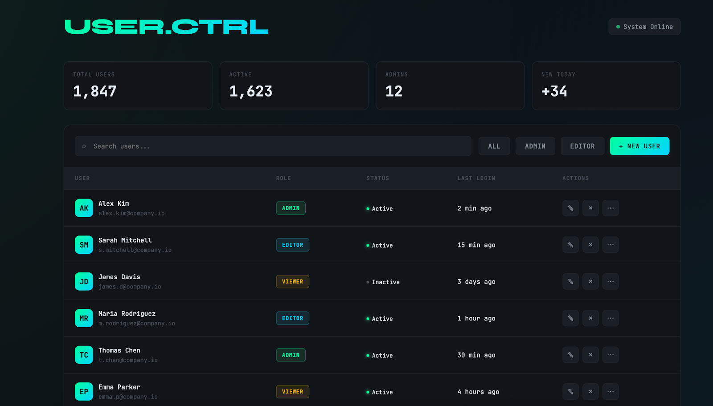
通过 Skills 提升 claude.ai 中 artifact 的质量
设计品味并不是唯一的限制。Claude 在构建 artifact 时还面临架构上的约束。Artifacts 是 Claude 创建的、显示在对话旁边的可交互、可编辑内容（例如代码或文档）。
除了上文探讨的设计品味问题之外，Claude 还有另一种默认行为，限制了它在 claude.ai 中生成出色前端 artifact 的能力。目前，当被要求创建前端时，Claude 只会构建一个包含 CSS 和 JS 的单个 HTML 文件。这是因为 Claude 知道，前端必须是单个 HTML 文件，才能作为 artifact 被正确渲染。
就像一位人类开发者如果只能在单个文件里编写 HTML/CSS/JS，就只能做出非常基础的前端一样，我们假设：如果指示 Claude 使用更丰富的工具链，它就能生成更出色的前端 artifact。
于是我们创建了 web-artifacts-builder skill。它利用 Claude 使用计算机的能力，引导 Claude 使用多个文件和 React、Tailwind CSS、shadcn/ui 等现代 Web 技术来构建 artifact。在底层，这个 skill 提供了脚本：(1) 帮助 Claude 高效搭建基础的 React 仓库；(2) 在编辑完成后使用 Parcel 将所有内容打包成单个文件，以满足单个 HTML 文件的要求。这正是 skills 的核心优势之一：通过让 Claude 调用脚本来执行样板代码操作，Claude 可以在减少 Token 用量的同时，提升可靠性和性能。
借助 web-artifacts-builder skill，Claude 可以利用 shadcn/ui 的表单组件和 Tailwind 的响应式网格系统，生成更完整的 artifact。
示例 1：白板应用
例如，在没有 web-artifacts-builder skill 的情况下，要求 Claude 创建一个白板应用，它输出的界面非常基础：
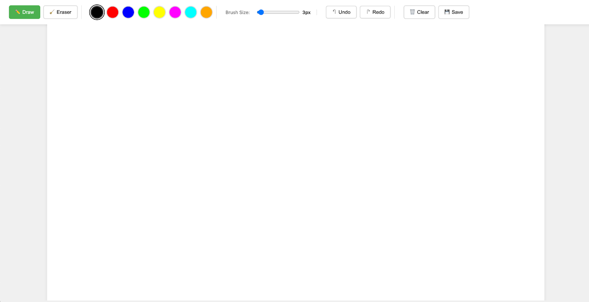
而使用新的 web-artifacts-builder skill 后，Claude 开箱即用地生成了一个更简洁、功能更丰富的应用，支持绘制不同的形状和文字：
示例 2：任务管理应用
同样，在要求创建任务管理应用时，没有 skill，Claude 生成的应用可以用，但极为简陋：
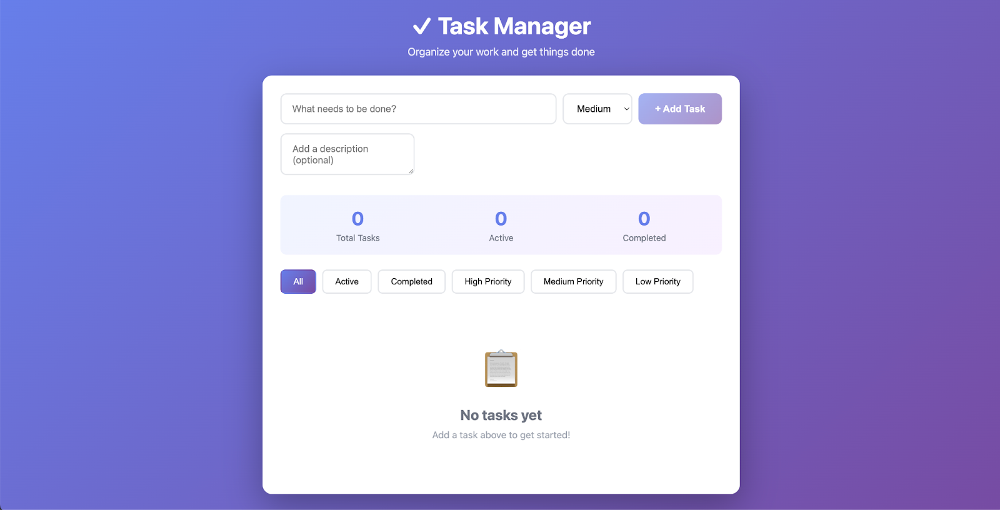
有了 skill，Claude 生成的应用开箱即用，功能更丰富。例如，Claude 加入了“新建任务”表单组件，用户可以为任务设置所属分类和截止日期：
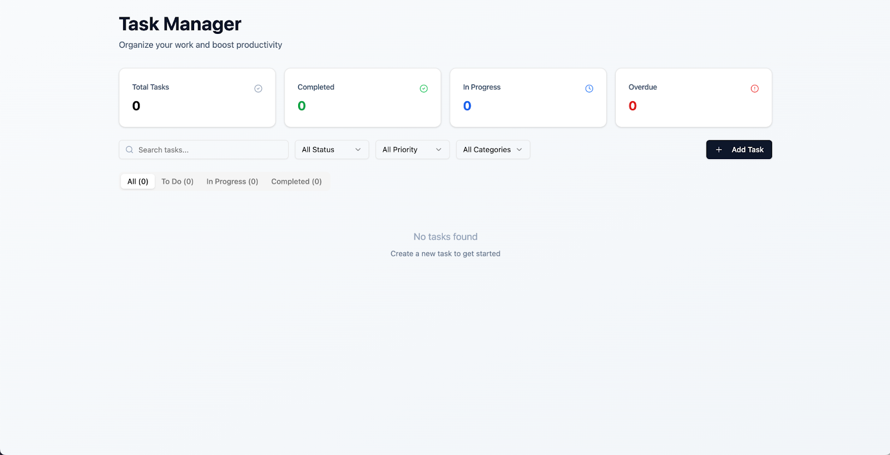
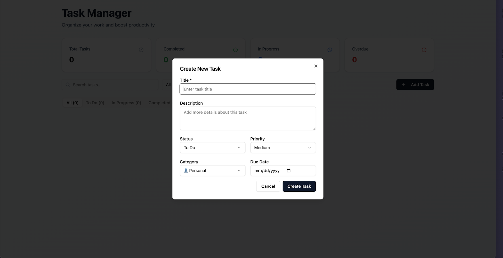
想在 Claude.ai 中试用这个新 skill，只需启用该 skill，然后在构建 artifact 时让 Claude“使用 web-artifacts-builder skill”即可。
通过 Skills 优化 Claude 的前端设计能力
这个前端设计 skill 体现了关于语言模型能力的一个更普遍的原则：模型往往能做到的比它默认表现出来的更多。Claude 拥有出色的设计理解力，但在缺乏引导时，分布收敛（distributional convergence）会掩盖这种能力。你固然可以把这些指令加入系统提示词，但这意味着每次请求都会携带前端设计上下文，即使这些知识与当前任务无关。相比之下，使用 Skills 能让 Claude 从一个需要不断指导的工具，转变为在每项任务中都能带来领域专长的助手。
Skills 也具有高度的可定制性：你可以根据自身需求创建专属的 Skill。这样，你就能定义想要固化进 skill 的基础要素，无论是公司的设计系统、特定的组件模式，还是行业特有的 UI 惯例。把这些决策编码进 Skill，就是把智能体思考过程中的组成部分变成可复用的资产，供整个开发团队使用。这个 skill 会成为持续存在、可扩展的组织知识，确保各个项目的质量保持一致。
这一模式并不局限于前端工作。只要 Claude 在拥有更广泛认知的情况下仍然输出千篇一律的结果，该领域就适合开发 Skill。方法始终一致：找出趋同的默认选择，提供具体的替代方案，在恰当的抽象层级上组织指引，并通过 Skills 让它可以复用。
对前端开发而言，这意味着 Claude 无需在每次请求中依赖提示词工程，就能生成风格鲜明的界面。想要上手，可以查看我们的 frontend design cookbook，或试用我们在 Claude Code 中的全新 frontend design 插件。
受到启发了吗？想创建你自己的前端 Skill，请查看 skill-creator。
致谢
本文由 Anthropic 应用 AI 团队撰写：Prithvi Rajasekaran、Justin Wei 和 Alexander Bricken，市场合作伙伴为 Molly Vorwerck 和 Ryan Whitehead。
相关文章
探索更多产品动态，以及使用 Claude 进行构建的团队最佳实践。
文章
2026 年 10 月 27 日
在 Google Cloud 上管理 Claude Code 的成本并证明投资回报
在 Google Cloud 上管理 Claude Code 成本并衡量投资回报的最佳实践。
Claude Code
文章
2026 年 10 月 22 日
构建智能体：何时将子智能体并入主智能体循环
在 Claude Platform 中构建智能体时，减少子智能体数量，转而采用渐进式披露的上下文和工具，可以在提升质量的同时降低成本和延迟。以下是迁移的时机与方法。
Claude Platform
文章
2026年10月19日
重新设计 Anthropic 的源代码管理
随着 Anthropic monorepo 的每日合并次数从约 2,500 次增长到超过 30,000 次，源代码管理成了开发中最大的瓶颈。本文介绍团队如何构建 Scion（一套专为始终在线的智能体设计的内部版本控制系统），并在五个月内完成从 git 的迁移。
Claude Code
（在新标签页中打开）
文章
2026年10月16日
日本的一位 Anthropic BDR 如何借助 Claude Managed Agents 安排一天的工作
一位商务拓展代表如何借助 Claude Managed Agents 和 Claude Tag 清理收件队列，并起草双语客户邮件。
Claude Managed Agents